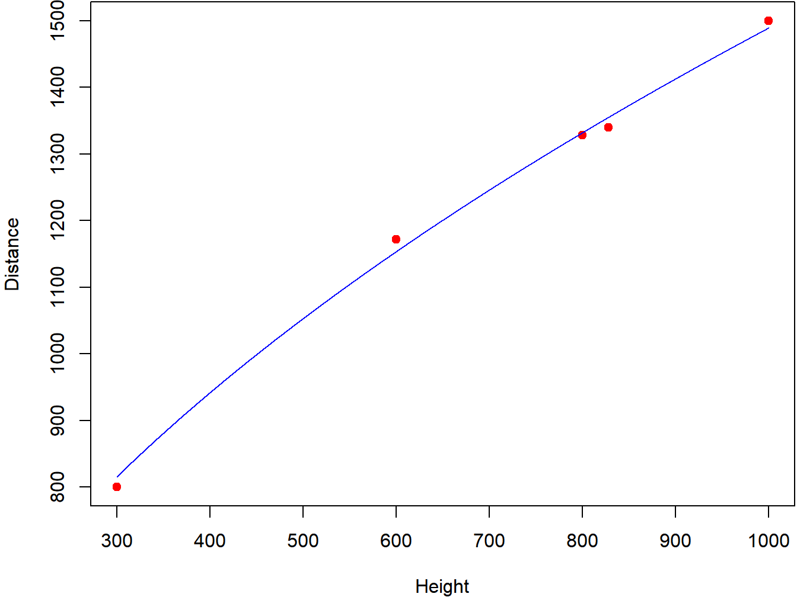

Chapter 1 Introduction
1.1 Basic Concepts of Statistical Analysis
Statistical tools and methods are used to describe data and make inferences regarding states of nature in a wide variety of areas of study. From simple graphs and numeric summaries provided in mainstream press to highly complex models used to describe measurements across a wide range of individuals or sampling units, we see reports making use of statistical tools and methods constantly. We will go through many of the commonly used methods in these notes.
After a brief introduction to descriptive statistics, making use of numeric and graphical summaries of variables, we will spend the remainder of the notes on inferential statistics that make use of information from a sample to make statements regarding a larger population of units. When conducting a study, researchers typically use the following strategy known as the Scientific Method.
- Define the problem/research question of interest, including what to measure and all relevant conditions or groups to study.
- Generate a hypothesis regarding the question of interest.
- Construct one or more predictions based on the hypothesis.
- Collect the data by means of a controlled experiment, observational study, or sample survey.
- Summarize the data numerically in tabular form and/or graphically.
- Analyze, interpret, and communicate the study’s findings.
Many methods exist for the final part, data analysis, that we describe in detail in these notes. Many factors lead to the choice of the statistical methods to use for the analysis, including: data type(s), sampling method, and distributional assumptions regarding the measurements.
Populations will be thought of as the universe of units, while samples will refer to subsamples of the populations that are observed and measured. In practice, we observe the sample with the goal of making inferences regarding the corresponding population. Consider the following examples.
1.2 Data Collection
Once a research question has been posed, then data are collected to attempt to answer the question. Three common methods of collecting data are: controlled experiments, observational studies, and sample surveys.
In a Controlled Experiment, a sample of experimental units is obtained, and randomized to the various treatments or conditions to be compared. There are many ways that these can be conducted, and we will describe many variations of them throughout this course. Some elements of controlled experiments are given here.
- Factors - Variable(s) that are controlled by the experimenter (e.g. new drug vs placebo, 4 doses of a pesticide, 3 packages for food product)
- Responses - Measurements/Outcomes obtained during the experiment (e.g. change in blood pressure, weeds killed, consumer ratings for the product)
- Treatments - Conditions that are generated by the factor(s). When only 1 factor, these are the levels. With 2 or more factors, these are combinations of levels.
- Experimental Unit - Entity that is randomized to the Treatments. These can be individual items (patients in clinical trial, plants in botanical experiment) or groups of items (classrooms of students in an education experiment, pens of animals in a feed study).
- Replications - Treatments are assigned to more than one experimental unit, allowing for experimental error (variation) to be measured.
- Measurement Unit - Entity on which measurements are obtained. These can be experimental units when individuals are randomized, or subunits within the experimental units (students in a classroom, pigs in a pen).
Controlled experiments can be conducted in laboratories/hospitals/greenhouses, but can also be conducted in the “real world” where they are often referred to as “field studies” or “natural experiments.”
There are many different treatment designs that are commonly applied. Some classes of designs are given below.
- Single Factor Designs - In these designs, there is a single factor to be studied with various levels.
- Multi Factor Designs - More than one factor is varied. Treatments correspond to combinations of factor levels.
- Completely Randomized Designs - Experimental units are randomly assigned to treatments with no restriction on randomization.
- Randomized Block Designs - Experimental units are grouped into homogeneous blocks, with treatments assigned so that each block receives each treatment.
- Latin Square Designs - Two or more blocking factors are available.
- Repeated Measure Designs - Units can be assigned to each treatment or be measured at multiple occasions on the same treatment.
Note that in designs with 2 or more factors, researchers are often interested in whether the effects of the levels of one factor depend on the levels of the other factor(s). When the effects do depend on the levels of the other factor, this is referred to as an interaction.
Example 1.1: Galileo’s Experiments with Gravity
Experimental work by Galileo has been described and analyzed (Dickey and Arnold 1995). Two experiments involved rolling a ball down a ramp and measuring the horizontal distance traveled by the ball as a function of the height at which the ball was dropped. One set of measurements contained only a ramp, the second set of measurements had a ramp and a flat shelf at the bottom of the ramp.
One theory is that the horizontal distance traveled increases with the height at which the ball is dropped on the ramp. However, the rate of change should decrease with height. Another restriction is that the distance traveled should be 0 when the height it is dropped at is 0. One mathematical equation that could be used to relate Distance (\(D\)) to Height (\(H\)) is the following.
\[ D = \alpha + \beta \sqrt{H} \]
In this formulation, it is expected that \(\alpha=0\), that is, that \(D=0\) when \(H=0\) and that \(\beta > 0\). The authors fit a regression model and, first found no evidence that \(\alpha \neq 0\). Then they fit a model without the intercept and found that \(D=47.086\sqrt{H}\). Table 1.1 contains the data and the predictions based on the equation for 5 observations. As seen in the table, the predictions are very close to the observed values. Figure 1.1 includes the observed data and fitted equation.
| Height | Distance |
|---|---|
| 1000 | 1500 |
| 828 | 1340 |
| 800 | 1328 |
| 600 | 1172 |
| 300 | 800 |

Figure 1.1: Galileo data and fitted equation
\[ \nabla \]
Example 1.2: Factors Effecting Color Strength of Dyes Applied to Modified Cotton
An experiment was conducted to measure the effects of 4 factors on color strength measured as K/S (Ben Ticha et al. 2016). Each factor was set at 2 levels and the experiment included all \(2^4=16\) combinations of the factor levels. The factors studied and their levels were: Cationizing Agent Amount (5%, 10%), pH (5, 11), Dying Temperature (40C, 100C), and Drying Time (30min, 60min).
\[ \nabla \]
In many settings, it is not possible or ethical to assign units to treatments. For instance, when comparing quality of products of various brands, you can take samples from the various brands, but not assign “raw materials” at random to the brands. Studies comparing residents of various parts of a country can only take samples of residents from the areas, not assign people to them. In studies of the effects of smoking or drinking, it is unethical to assign subjects to the conditions. In all of these cases, we refer to these as Observational Studies. Typically the method of analysis is the same for controlled experiments and observational studies, however the ability to imply “cause and effect” is more difficult in observational studies than controlled experiments. Researchers in such studies must try and control for any potential alternative explanations of the association. For an interesting discussion of various aspects of observational studies, including: external validity (generalizing results beyond the original study), causation, reliability of measurement, and inclusion of covariates, involving study of interruption and multitasking (Walter, Dunsmuir, and Westbrook 2015).
1.3 Variable Types
In most settings, researchers have one or more “output” variable(s) and one or more “input” variable(s). For instance, a study comparing salaries among males and females would have the output variable be salary and possible input variables: gender (1 if female, 0 if male), experience (years), and education (years). The output variables are often referred to as dependent variables, responses, or end points. The input variables are often referred to as independent variables, predictors, or explanatory variables.
Variables are measured on different scales, and the data analysis methods are determined by variable types. Variables can be categorical or numeric. Categorical variables can be nominal or ordinal, while numeric variables can be discrete or continuous.
Examples of nominal variables include gender, hair color, and automobile make. These are categories with no inherent ordering. Ordinal variables are categorical, but with an inherent ordering, such as: strongly disagree, disagree, neutral, agree, strongly agree. Discrete variables can take on only a finite or countably infinite set of values, these can be counts of number of occurrences of an event in a series of trials or in a fixed time or space, or the number facing up on a roll of a dice. Continuous variables can take on any value along a continuum, such as temperature, time, or blood pressure. When discrete variables take on many values, they are often treated as continuous, and continuous variables are often reported as discrete values.
Example 1.3: Consistency of Ratings Based on a Rating Scale for Videostroboscopy
A study was conducted to measure inter-rater and intra-rater reliability of the Voice-Vibratory Assessment with Laryngeal Imaging (VALI) rating form for assessing videostroboscopy and high-speed videoendoscopic (HSV) recordings (Poburka, Patel, and Bless 2017). Table 1.2 contains information on the 30 subjects in the study. These include: subject ID, Age (continuous, reported as a discrete variable), gender (nominal), and an overall dysphonia grade (ordinal, with 0=normal, 1=mild, 2=moderate, 3=severe).
| Subject | Age | Gender | Dysphonia |
|---|---|---|---|
| 1 | 10 | M | 3 |
| 2 | 19 | M | 1 |
| 3 | 27 | F | 1 |
| 4 | 32 | M | 1 |
| 5 | 37 | F | 2 |
| 6 | 37 | M | 0 |
| 7 | 39 | F | 3 |
| 8 | 42 | F | 2 |
| 9 | 44 | F | 2 |
| 10 | 45 | F | 2 |
| 11 | 45 | F | 3 |
| 12 | 47 | F | 3 |
| 13 | 48 | M | 1 |
| 14 | 49 | F | 2 |
| 15 | 50 | F | 3 |
| 16 | 51 | F | 3 |
| 17 | 51 | M | 0 |
| 18 | 51 | M | 0 |
| 19 | 53 | F | 1 |
| 20 | 57 | F | 3 |
| 21 | 57 | F | 2 |
| 22 | 59 | F | 2 |
| 23 | 60 | F | 3 |
| 24 | 60 | M | 1 |
| 25 | 62 | F | 2 |
| 26 | 62 | M | 3 |
| 27 | 64 | F | 3 |
| 28 | 70 | M | 3 |
| 29 | 77 | F | 3 |
| 30 | 89 | F | 2 |
\[ \nabla \]